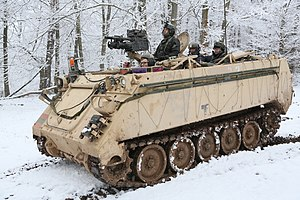

.png)
M113
M113 ( англ. Armoured Personnel Carrier M113 ) - бронетранспортер (БТР) США . Розроблено у 1957—1959 роках. Запущений у серійне виробництво у січні 1960 року; виробництво тривало до 2007 року [2] . Тривалий час залишався основним бронетранспортером США, у значних кількостях поставлявся також до інших країн і використовувався у багатьох збройних конфліктах.
Загальна кількість випущених бронетранспортерів M113, включаючи машини з його базі, становило понад 88 000 одиниць. Станом на 2022 рік, використовуються більш ніж у 44 країнах світу, включаючи США, хоч і поступово витісняються більш сучасними машинами. [3]
Історія створеня
У роки Другої світової війни стандартними бронетранспортерами військ США були напівгусеничні M2 та M3 . Проте досвід бойових дій виявив принципові недоліки машин такого типу - недостатню прохідність на пересіченій місцевості та недостатню захищеність, підвищенню якої перешкоджала неможливість подальшого зростання маси та зниження прохідності бронетранспортера. Вже з осені 1944 року було розпочато розробку нової машини на гусеничному шасі, проте процес пошуку вдалої конструкції затягнувся більш ніж на десять років [4] . Створений у 1945 році M44виявився занадто великий для прийнятої на той час доктрини, що диктувала використання бронетранспортерів, що вміщали одне відділення піхоти. Створений у 1946—1951 роках M75 виявився надто дорогим і був випущений порівняно малою серією [5]
.jpg)
.jpg)
M113
 Классифікація бронетранспортерБойова масса, т 10,37
8,54—10,91 (A1) 11,33—11,72 (A2) 10,02—12,32 (A3) 14,04 (A3 с навісним бронюванням) Роки виробництва 1960 - 2007
Экіпаж, чол. 2
Десант, чол. 11